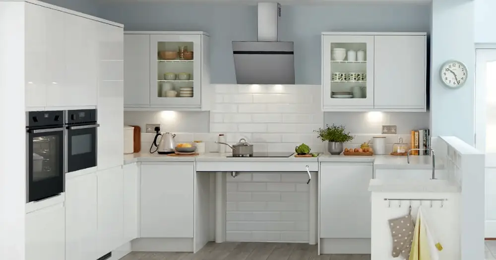
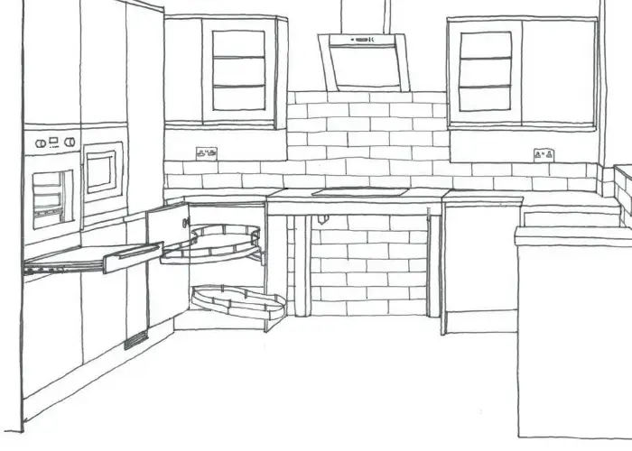

La rénovation cuisine Paris 2026 s'annonce comme un secteur en pleine effervescence, porté par de nouvelles tendances design et des innovations technologiques. Que vous résidiez dans le 16ème arrondissement huppé ou dans le 19ème en pleine gentrification, chaque quartier parisien présente ses spécificités en termes de prix et d'exigences architecturales. Entre les contraintes des immeubles haussmanniens et les opportunités offertes par les constructions modernes, rénover sa cuisine dans la capitale nécessite une approche sur-mesure. Cet article vous guide à travers les prix actuels, les tendances incontournables et les particularités de chaque arrondissement pour réussir votre projet de rénovation cuisine en 2026.
Prix de la rénovation cuisine à Paris en 2026 : budget par arrondissement
Le coût d'une rénovation cuisine à Paris varie considérablement selon l'arrondissement et le niveau de prestation souhaité. En 2026, comptez entre 12 000€ et 35 000€ pour une cuisine complète de 12m². Les arrondissements centraux (1er, 4ème, 6ème, 7ème) affichent les tarifs les plus élevés, avec des surcoûts liés aux contraintes d'accès et aux exigences patrimoniales. Les zones en périphérie comme le 19ème, 20ème ou Belleville proposent des prix plus abordables tout en offrant d'excellentes prestations. La main-d'œuvre représente 40 à 50% du budget total, tandis que les matériaux et équipements constituent le reste. Les cuisines haut de gamme dans les beaux quartiers peuvent atteindre 50 000€ à 80 000€, notamment dans le Triangle d'Or ou à Saint-Germain-des-Prés.
Fourchettes de prix par type de rénovation
Rénovation partielle (peinture, électroménager) : 8 000€ - 15 000€. Rénovation complète standard : 15 000€ - 25 000€. Rénovation haut de gamme : 25 000€ - 50 000€. Cuisine sur-mesure luxe : 50 000€ et plus.
Tendances design 2026 pour les cuisines parisiennes
Les tendances cuisine 2026 à Paris privilégient la durabilité et la fonctionnalité. Le style néo-haussmannien fait fureur, mariant moulures classiques et équipements ultramodernes. Les cuisines ouvertes restent plébiscitées, particulièrement adaptées aux appartements parisiens souvent exigus. Les matériaux naturels comme le bois massif, la pierre reconstituée et les finitions mate dominent les préférences. L'îlot central devient incontournable, même dans les petits espaces grâce aux solutions modulables. Les couleurs tendance incluent les verts sauge, les bleus profonds et les tons terre, contrastant avec des plans de travail en quartz ou granit. L'éclairage LED intégré et les solutions de rangement optimisées répondent aux défis de l'habitat parisien. Les électroménagers encastrables et connectés s'imposent pour préserver l'esthétique tout en maximisant les performances.
Matériaux phares en 2026
Bois de chêne certifié PEFC, quartz recyclé, céramique ultra-fine, laque mate écologique, poignées laiton brossé, robinetterie noire mate.
Contraintes spécifiques des immeubles parisiens
La rénovation cuisine Paris 2026 doit composer avec les spécificités architecturales de la capitale. Les immeubles haussmanniens imposent des contraintes strictes : hauteurs sous plafond généreuses mais canalisations anciennes, murs porteurs à préserver, et parfois l'accord de la copropriété pour les modifications importantes. Les appartements sous combles nécessitent des solutions sur-mesure pour optimiser les espaces en pente. Dans les immeubles récents, les cloisons sèches offrent plus de flexibilité mais requièrent une attention particulière pour l'isolation phonique. Les normes énergétiques 2026 exigent une attention particulière à l'étanchéité et à la ventilation. Mistral Pro Reno maîtrise parfaitement ces contraintes techniques et réglementaires, garantissant un projet conforme et durable. L'évacuation des gravats et l'approvisionnement en matériaux constituent des défis logistiques majeurs dans les rues étroites parisiennes.
Points de vigilance technique
Vérification de la structure porteuse, mise aux normes électriques, étanchéité des réseaux d'eau, conformité VMC, respect des règles de copropriété.
Optimisation de l'espace : solutions pour petites cuisines parisiennes
L'art de la rénovation cuisine parisienne réside dans l'optimisation maximale de chaque centimètre carré. Les solutions 2026 privilégient la verticalité avec des meubles hauts jusqu'au plafond, des tiroirs à fermeture douce et des systèmes de rangement coulissants. Les cuisines en L ou en U exploitent parfaitement les angles, tandis que les solutions péninsule créent un espace repas sans cloisonner. Les plans de travail escamotables et les tables pliantes offrent une modularité précieuse. L'intégration totale de l'électroménager permet de gagner un espace visuel considérable. Les crédences réfléchissantes et les couleurs claires agrandissent visuellement l'espace. Mistral Pro Reno propose des études 3D personnalisées pour visualiser toutes les possibilités d'aménagement. L'éclairage multicouches (général, fonctionnel, décoratif) structure l'espace et crée une ambiance chaleureuse même dans les cuisines les plus compactes.
Astuces gain de place
Portes coulissantes, électroménager compact, rangements d'angle optimisés, crochets muraux, étagères suspendues, plan de travail mobile.
Démarches administratives et délais en Île-de-France
La rénovation cuisine en Île-de-France nécessite parfois des démarches administratives spécifiques. Pour les modifications légères (changement d'équipements, peinture), aucune autorisation n'est requise. En revanche, l'abattage de cloisons, la modification des évacuations ou la création d'ouvertures peuvent nécessiter une déclaration préalable en mairie. Dans les secteurs protégés (monuments historiques, sites classés), l'accord de l'Architecte des Bâtiments de France est indispensable. Les copropriétés imposent souvent leurs propres règles concernant les horaires de travaux et les modifications communes. Comptez 6 à 8 semaines pour une rénovation complète, hors délais administratifs. La période idéale s'étend de mars à octobre pour éviter les contraintes hivernales. Mistral Pro Reno vous accompagne dans toutes ces démarches et coordonne les différents corps de métier pour respecter les délais. Une planification rigoureuse permet d'éviter les mauvaises surprises et les surcoûts.
Planning type de rénovation
Semaine 1 : démolition et gros œuvre. Semaines 2-3 : plomberie et électricité. Semaines 4-5 : revêtements et peinture. Semaines 6-7 : pose de la cuisine. Semaine 8 : finitions et réception.

La rénovation cuisine Paris 2026 représente un investissement majeur qui valorise significativement votre patrimoine immobilier. Entre les tendances design émergentes, les contraintes techniques parisiennes et les opportunités d'optimisation, chaque projet nécessite une expertise pointue. Mistral Pro Reno, spécialiste de la rénovation en Île-de-France, vous accompagne de A à Z dans votre projet. Notre équipe maîtrise parfaitement les spécificités de chaque arrondissement parisien et vous garantit un résultat à la hauteur de vos attentes, dans les délais et le budget convenus.
Questions fréquentes
Quel est le prix moyen d'une rénovation cuisine à Paris en 2026 ?
Entre 15 000€ et 25 000€ pour une cuisine complète standard de 12m², avec des variations selon l'arrondissement et le niveau de finition souhaité.
Faut-il une autorisation pour rénover sa cuisine à Paris ?
Généralement non pour un simple réaménagement. Une déclaration préalable peut être nécessaire pour l'abattage de cloisons ou les modifications importantes.
Quels sont les délais moyens pour une rénovation cuisine parisienne ?
Comptez 6 à 8 semaines pour une rénovation complète, selon la complexité du projet et les contraintes d'accès de l'immeuble.
Comment optimiser une petite cuisine parisienne ?
Privilégiez les solutions verticales, l'électroménager encastrable, les rangements d'angle et les couleurs claires pour agrandir visuellement l'espace.
Besoin d'un devis pour votre projet ?
Obtenez une estimation gratuite en quelques clics avec notre simulateur.
Simulateur de Devis Gratuit